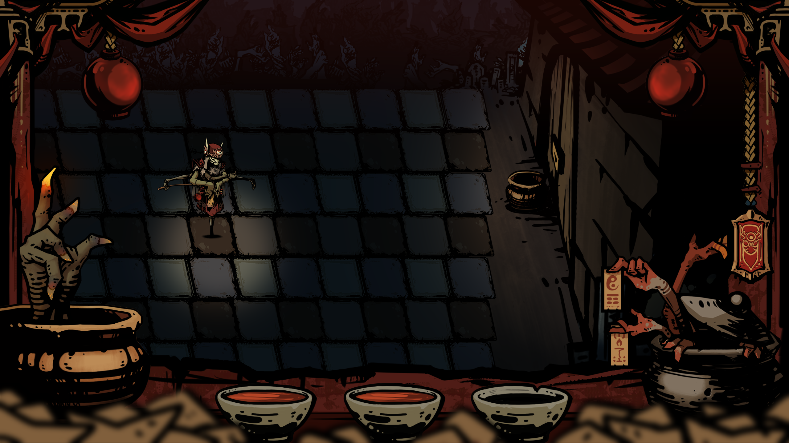
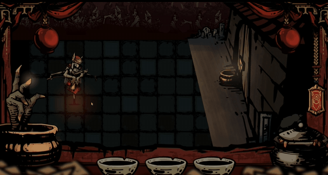
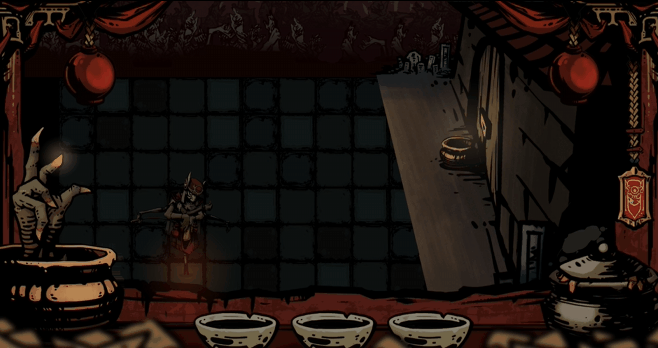
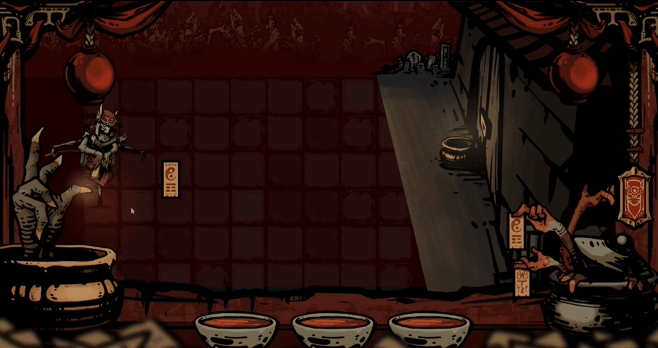
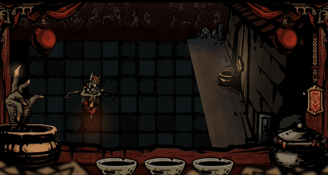

Khan-Bong

Khan-Bong / 牵魂
《牵魂》是一款回合制策略游戏，试图呈现人在黑暗中前行时产生的不安与恐惧。
玩家扮演一名在昏暗香火引导下前行的人，在无法直接看见鬼魂的环境中避开追逐者，并最终抵达棋盘另一端。游戏名称“牵魂”取意于福建与台湾地区与亡魂相关的民俗意象，叙事与视觉风格也从当地神鬼文化中汲取灵感。
Khan-Bong is a turn-based strategy game that aims to convey the insecurity and dread of navigating through darkness.
The player follows a dim light—incense—through a dark environment, avoiding unseen enemies and trying to reach the end of the board. The title draws from Fujian and Taiwanese folklore surrounding the souls of the dead, which also inspired the game's narrative and visual style.
游戏目标Game Goal
玩家需要控制主角，在避开鬼魂的同时抵达棋盘另一端的终点。
The player controls the protagonist and must reach the endpoint at the far side of the board while avoiding the ghosts.

核心机制Mechanic
- 棋盘上存在玩家不可直接看见的鬼魂。主角每行动一次，鬼魂也会行动一次。
- 如果鬼魂与玩家进入同一个格子，游戏结束。
- 当鬼魂改变移动方向时，屏幕上方的两盏灯笼会亮起。
- 左下角的五炷香（手指）会显示玩家与鬼魂之间的大致方位。玩家需要结合自己的位移与香火反馈，不断推断鬼魂的位置，并通过走位将其甩开。
- Invisible ghosts occupy the board. Whenever the protagonist moves once, the ghosts also move once.
- If a ghost reaches the same grid as the player, the game ends.
- When a ghost changes direction, two lanterns at the top of the screen light up.
- Five incense sticks at the lower left indicate the ghost's relative direction and approximate distance, asking the player to infer its position from changing feedback.

移动Movement
- 主角与鬼魂每回合都在棋盘上移动一格。
- 主角不能后退，鬼魂视关卡推进，由固定路线前进进化至靠近主角。
- 玩家点击目标格子来移动主角。
- Both the protagonist and the ghosts move one grid per turn.
- The protagonist cannot backtrack, while ghosts maintain their forward direction.
- The protagonist moves by clicking the target grid.
技能Skills
从第三关开始，鬼魂获得追踪玩家的新机制；与之对应，玩家也会获得照明、禁锢两个技能，用来干扰、判断或摆脱鬼魂。
From the third level onward, ghosts gain a new tracking mechanic. The player also receives two skills to counter them.

游戏场景Gamescene
